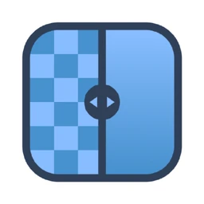

01
Ressortir une vieille photo de famille
Une photo toute petite et pixelisée devient 4 fois plus grande, assez pour un fond d'écran ou un tirage de taille raisonnable.
Vieille photo→Ultrasharp→4× plus grande

Une appli gratuite et open source qui agrandit tes images pixelisées avec l'IA, directement sur ton ordi : pas de crédits, pas de filigrane.

Upscayl est une appli gratuite et open source (licence AGPL-3.0) qui agrandit les images en basse résolution ou pixelisées grâce à l'IA (modèles Real-ESRGAN, Remacri, Ultrasharp, High Fidelity…). Elle s'installe sur ton ordi et le calcul se fait sur ta carte graphique : la version bureau marche hors connexion et tes images restent chez toi. Elle agrandit jusqu'à 4 fois par passe ; au-delà, l'image est seulement redimensionnée (sauf avec « Double Upscayl », qui fait deux passes). Attention : elle ne corrige pas une photo floue ou mal mise au point.
Installeur .exe dans les versions publiées sur GitHub (ou sur le site officiel). Il faut une carte graphique compatible Vulkan.
RecommandéMac App Store, fichier .dmg sur GitHub ou Homebrew : brew install --cask upscayl.
FacileFlathub, AppImage, Snap, AUR (upscayl-bin) ou paquets DEB/RPM des versions publiées. Même condition : une carte graphique compatible Vulkan.
Au choixUne photo toute petite et pixelisée devient 4 fois plus grande, assez pour un fond d'écran ou un tirage de taille raisonnable.
Agrandir les images de fournisseurs trop petites pour une boutique en ligne, sans payer de crédits par image.
Une image générée trop petite pour l'impression ou un fond d'écran : un passage dans Upscayl la rend utilisable en grand format.
Le mode « Batch Upscayl » agrandit un dossier entier d'un coup : tu lances et tu reviens plus tard.
L'outil en ligne de commande upscayl-ncnn et des modèles personnalisés (dépôt custom-models) pour aller plus loin.
Projet AGPL très suivi, qui garde tes images sur ton ordi. À savoir : il faut une carte graphique compatible Vulkan, et l'IA ne fait pas de miracle sur une photo floue.
Version 2.15 publiée en janvier 2026 (nouvelle interface, plusieurs langues, nouveau modèle).
GitHub affichait environ 51 300 étoiles et 2 700 forks ; modèles personnalisés partagés par la communauté.
L'appli bureau tourne hors connexion, d'après les tests publiés ; pas d'audit indépendant.
Appli gratuite sous AGPL, financée par dons et sponsors ; une offre Cloud payante existe à côté.
Appli stable sur Windows, Mac et Linux ; limitée par le matériel (carte Vulkan obligatoire).
Comment on note : 5 critères notés sur 5, vérifiés sur GitHub, le README officiel, la FAQ et des tests publiés le 14 novembre 2026. La note sur 10 est la moyenne ramenée sur 10.
Bon pour : Agrandir sans payer, en local
Bon pour : Les pros qui veulent le meilleur rendu
Bon pour : Sans carte graphique, très grands formats
Bon pour : Les ordis sans carte graphique compatible
Aucun agrandisseur ne rattrape une photo vraiment floue : l'IA ajoute des détails plausibles, pas les vrais.

Chaque vidéo RepoPop t'explique un dépôt GitHub utile en moins d'une minute, avec son kit comme celui-ci.